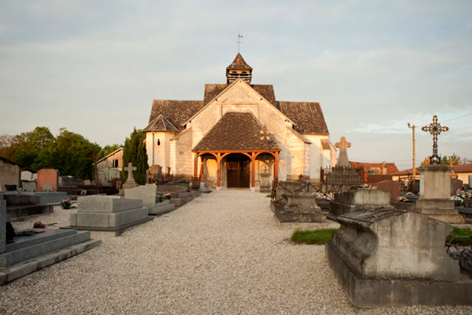

Sonntag · 26. Juli
Anreise und entspannt ankommen
Nach der Autofahrt erledigen wir in Arcis-sur-Aube den ersten Lebensmitteleinkauf und beziehen anschließend in Ruhe das Ferienhaus. Garten und Terrasse dürfen sofort erobert werden, bevor ein kurzer Spaziergang durch Saint-Rémy-sous-Barbuise die Umgebung zeigt. Am Abend bleibt der Grill an: unkompliziert essen, anstoßen und ohne Programm in den Urlaub finden. So beginnt die Woche bewusst langsam und alle können erst einmal ankommen.